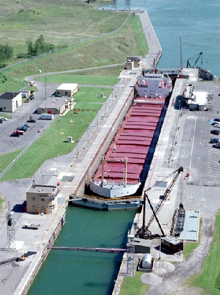

1. St. Lambert Lock—Saint Lambert, QC
2. Côte Ste. Catherine Lock—Sainte-Catherine, QC
3. Beauharnois Locks (two locks)—Melocheville, QC, at 45°18′12.6″N 73°55′36.5″W and 45°19′0.1″N 73°55′6.6″W
4. Snell Lock—Massena, NY
5. Eisenhower Lock—Massena, NY
6. Iroquois Lock—Iroquois, ON, at 44°49′48″N 75°18′46.8″W
